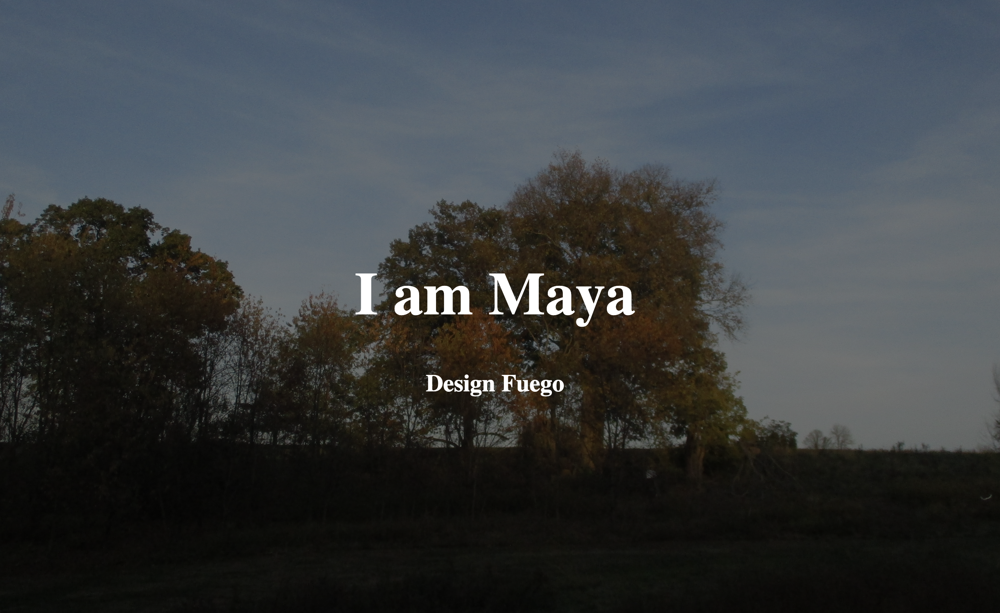
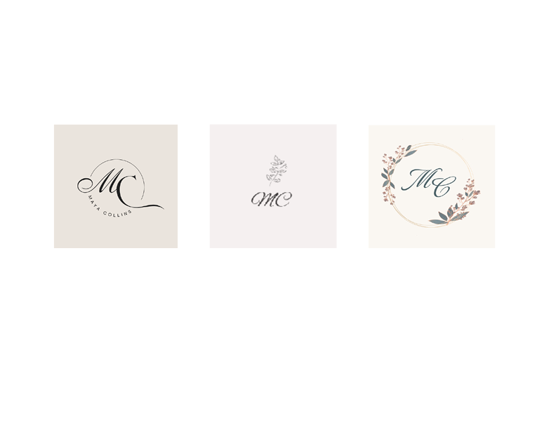
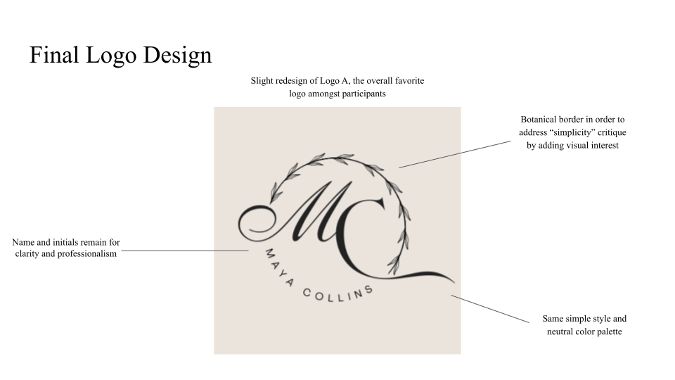
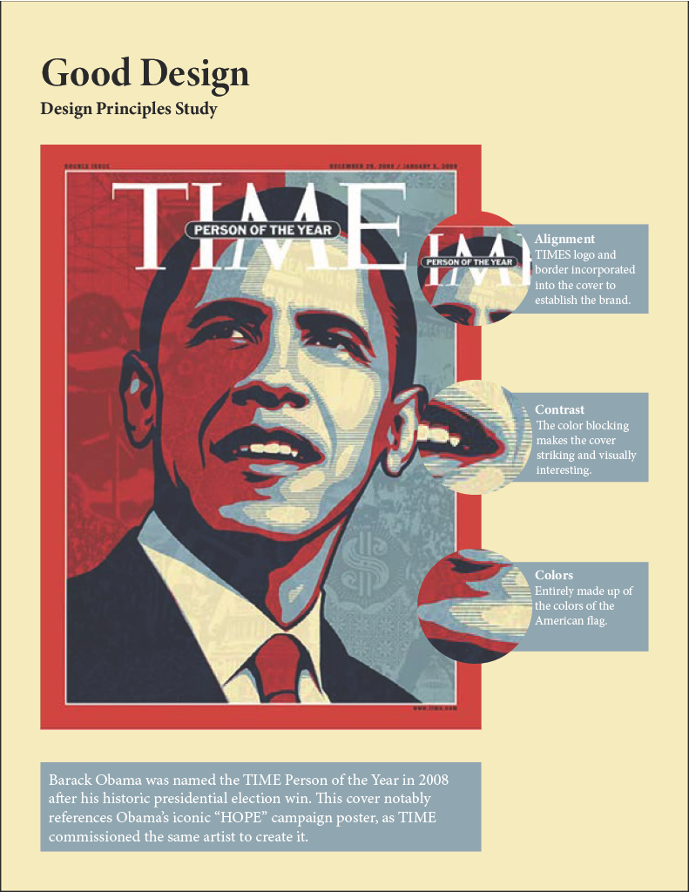
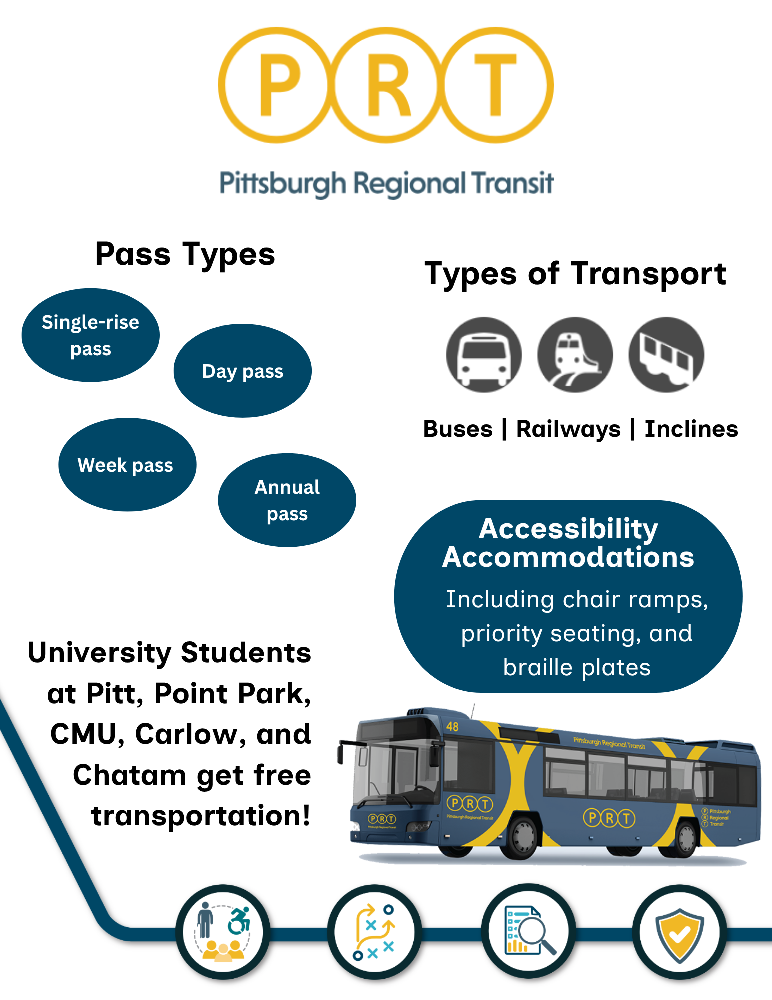
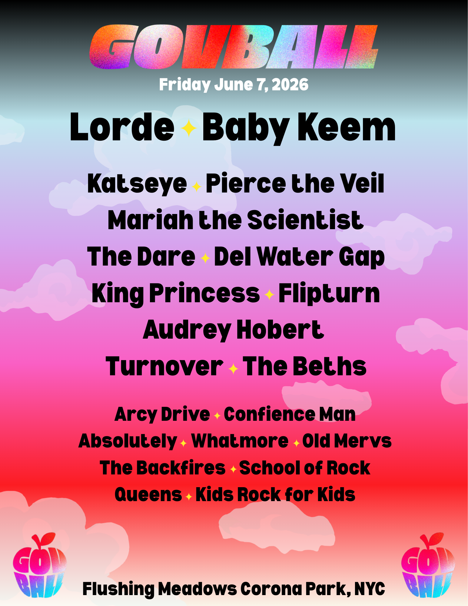
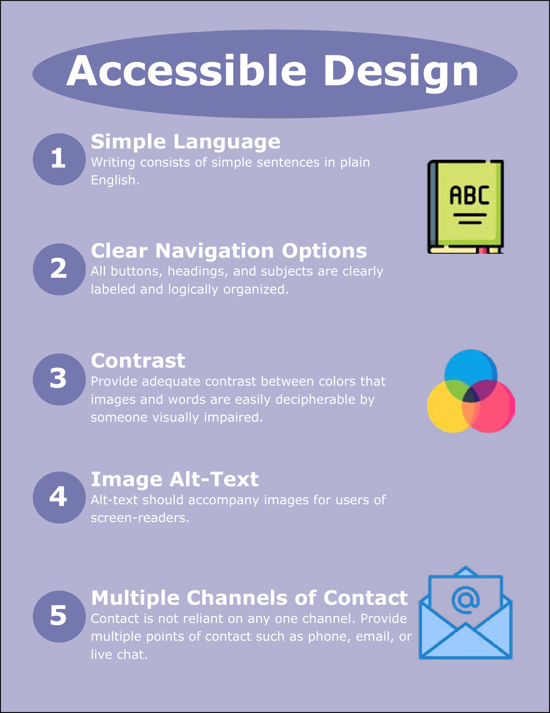
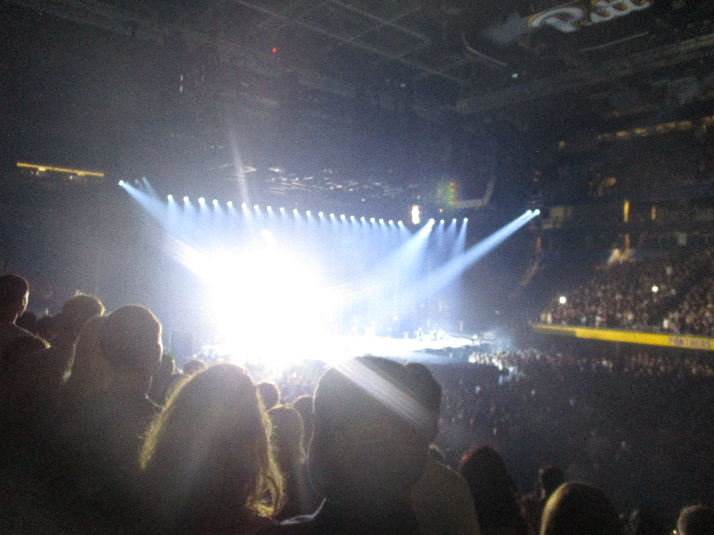

Long Form
Client Project

A flyer for a film screening made for a client.
Integrating Writing and Design Portfolio

Introduction website including a personal definition and examples of good design.

Three variations of a personal logo with the initials "MC" and floral accents.

A study done to see which of the three logos is most effective, and a finalized logo based on feedback from the participants.

An analysis of how principles of design manifest in an example of good design.
1. Consider the role of rhetoric, technology, and ethics in acts of making.
Through making these projects, I have been able to examine the relationship between rhetoric, technology, and ethics. All of these aspects must be evaluated when designing something for user experience and viewer comprehension. In creating my Design Fuego website, I had to consider the readability of my writing and how it interacted with the technological aspects of the site. I also had to consider ethics when writing descriptions of the site's visuals for accessibility purposes.
2. Leverage Design Principles.
My knowledge of design principles that I learned about in this course allowed me to analyze and create designs with intention. I can explain why and how certain designs are or are not effective. In my Good Design Study, I analyzed which design principles were most prominent in the 2008 TIME Person of the Year cover, and how they contributed to the overall success of the design.
3. Engage with others in a workshop environment.
The opportunity to workshop my projects with my peers in this course allowed me to hear new perspectives and ideas that helped me improve my work. I found this practice most helpful for my UX Design Study presentation, as the feedback from my peers helped me improve my presentation.
4. Practice revision within and across media forms.
The ability to revise my work after initially completing it in this course has allowed me to improve upon my portfolio in its entirety. I have gone back and revised projects as I've learned about design principles and workshopped with my peers. The opportunity to revise my Good Design Study allowed me to improve my writing. I was also able to fix inconsistencies in the formatting of my text that I had not noticed myself.
5. Learn to present your work.
Through presenting multiple projects to my peers during this course, I've developed skills such as engaging my audience, clear and concise communication, and confidence. I had the opportunity to informally present my Logo A/B/C project and my Good Design Study to a small group of peers for feedback. I also presented my Design Fuego website and my UX Design Study more formally at the front of the class. Both of these types of presentation experiences helped me develop vital skills.

An infographic communicating information about the Pittsburgh Regional Transit system.

An advertisement graphic for the artist lineup on the first day of the Governor's Ball music Festival in New York.

An accessible PDF File discussing the most crucial aspects of making designs accessible for all.
1. Consider the role of rhetoric, technology, and ethics in acts of making.
In creating my accessible PDF file, I had to most closely consider the role of rhetoric, technology, and ethics in the act of making. I had to account for various types of disabilities and how that may affect how someone's comprehension of a design or media, whether that be neurodivergency, visual impairment, or auditory impairment. This project resulted in my considering inclusivity in design in ways I had not previously considered, and it will affect how I conduct future projects.
2. Leverage Design Principles.
I was able to leverage design principles in the creation of all of my projects, but particularly my infographic and advertisement. I paid attention to the alignment and proximity of text and images, prioritizing readability and visual interest. I had to consider the contrast between my text and background, especially in my advertisement, due to all the colors I used. I employed repetition with different elements throughout both projects to ensure consistency and create a cohesive brand image.
3. Engage with others in a workshop environment.
I found that workshop sessions were very helpful for these projects as I got the opportunity to test the effectiveness of my advertisement, infographic, and accessible PDF. I received feedback about the most engaging elements of these projects and what could be improved. As a result of these workshops, I changed the color of some of my text for readability and added and adjusted graphics to make each project more cohesive.
4. Practice revision within and across media forms.
The ability to revisit and revise my work has greatly improved the final versions of my projects. After workshopping with peers and reviewing my own work, I found myself adjusting fonts and graphics on both my infographic and advertisement. Revisiting my work with fresh eyes has allowed my to improve it overall.
5. Learn to present your work.
Presenting my work to others gave me an additional perspective on the clarity of my writing. I've been able to improve my written communication in all of my projects after reading my work out loud in front of others.
A flyer for a film screening made for a client.
1. Consider the role of rhetoric, technology, and ethics in acts of making.
The role of rhetoric was most prominent in both my 10-page spread and branding project. While I did not write body text for my 10-page spread, just the headings and captions reframed the spread. It helped me internalize the importance of writing in design, even on a seemingly small scale. In my branding project, the specifics of the tagline and mission statement made a big difference in the perception of the brand.
2. Leverage Design Principles.
I was able to leverage Design principles in all three of these projects, but particularly in my 10-page spread. The scale of this project allowed me to see how these principles all interact and their individual importance. With a project of this size, if alignment, contrast, proximity, or repetition are not sufficient, it throws off the entire project.
3. Engage with others in a workshop environment.
Engaging with others in a workshop environment particularly helped me with my branding project. While my study was based on the feedback from my three participants, feedback from those doing similar projects who are familiar with design offered a new, valuable perspective on my aesthetic choices.
4. Practice revision within and across media forms.
My project that improved the most from revision was my 10-page spread. While I was able to look up inspiration before I created it, feedback from others perceiving my work was the most helpful. I had initially found it difficult to truly emulate a magazine, so critiques about my layout and composition helped me improve the project significantly.
5. Learn to present your work.
Presenting my branding project to the class was a helpful opportunity to practice public speaking skills and get feedback on my work in a more professional context. I noticed that this presentation was much easier for me than previous ones. While the focus on me and my work can be daunting, it is ultimately the most effective way to receive feedback.

generated by Pitt Fuego
“Why make a spark when you can light a fire?